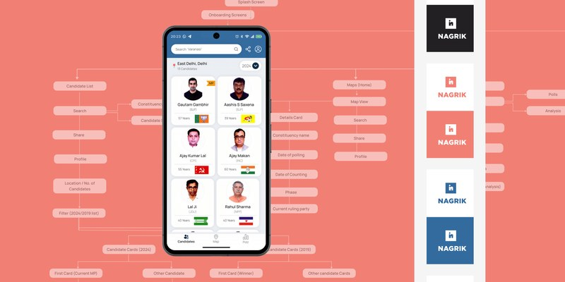
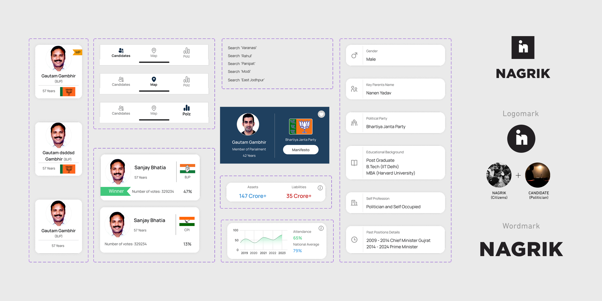
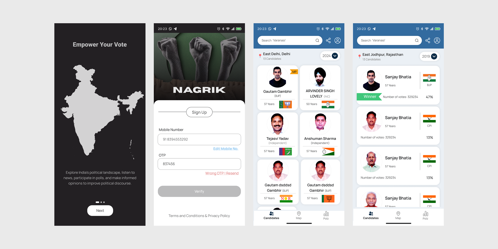
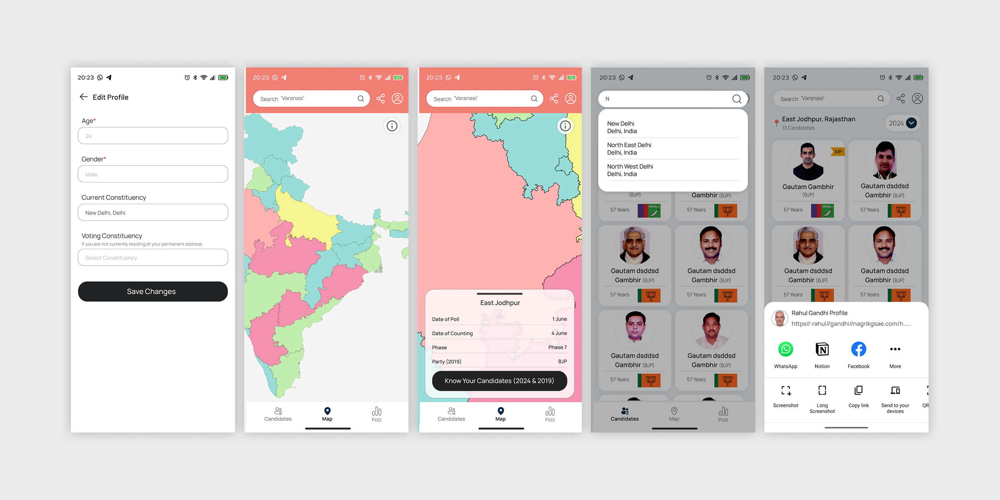
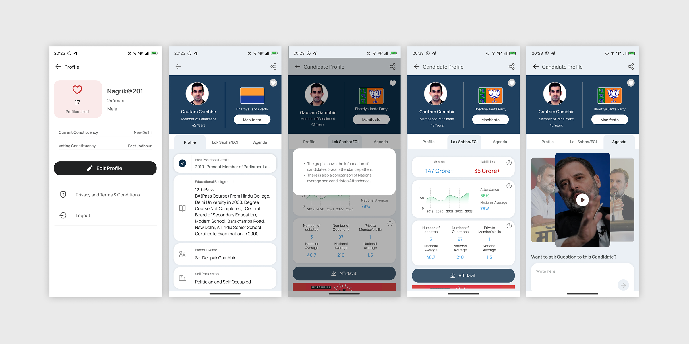

Political Media Application — Citizen-to-Leader Connection Platform
Nagrik is a Political Social Media Platform that aims to connect citizens to their Political leaders by providing a way to learn about their qualifications, connect to them, ask questions, and take part in surveys.

My main challenge was to create an app that aligned with the client's vision while keeping it user-friendly. The client had specific requirements for easy navigation and a clear flow of information, which I used as a guide throughout the entire design process.
Balancing political sensitivity, information density, and accessibility meant every design decision had to be intentional and well-justified.
Establish the app's visual foundation and brand elements that feel trustworthy and civic
Create a comprehensive design system and colour palette consistent across all screens
Design an engaging onboarding experience for user orientation and first-time flow
Craft intuitive app UI for political information access, surveys and leader Q&A

I created app screens from scratch, starting with the client's ideas as foundation. Developed a cohesive design system to give all screens a consistent look and feel, making the app more professional and easy to use.
I also worked on the logo, trying to make it as relatable as possible to the platform's nature. I chose a typeface that connects with the political essence of the app — authoritative yet approachable.
I built a solid information structure to ensure users could easily navigate through the app — from discovering leaders to participating in surveys and reading policy updates.
I began with wireframes to plan layout and structure, then created interactive prototypes for user testing, refining the design based on feedback to make it more intuitive.



Working on Nagrik was a valuable experience that strengthened my professional skills in several key areas. Creating app screens from scratch improved my ability to translate client ideas into functional and visually cohesive designs. It deepened my understanding of how design can serve civic engagement and democratic participation.